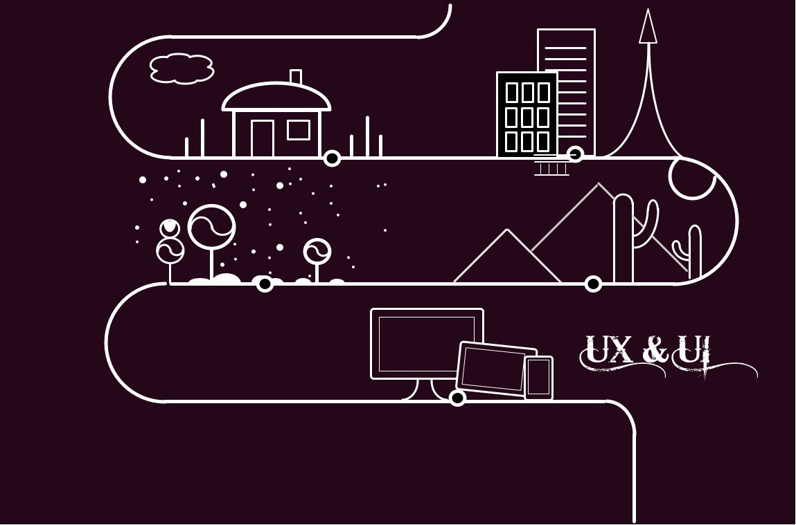
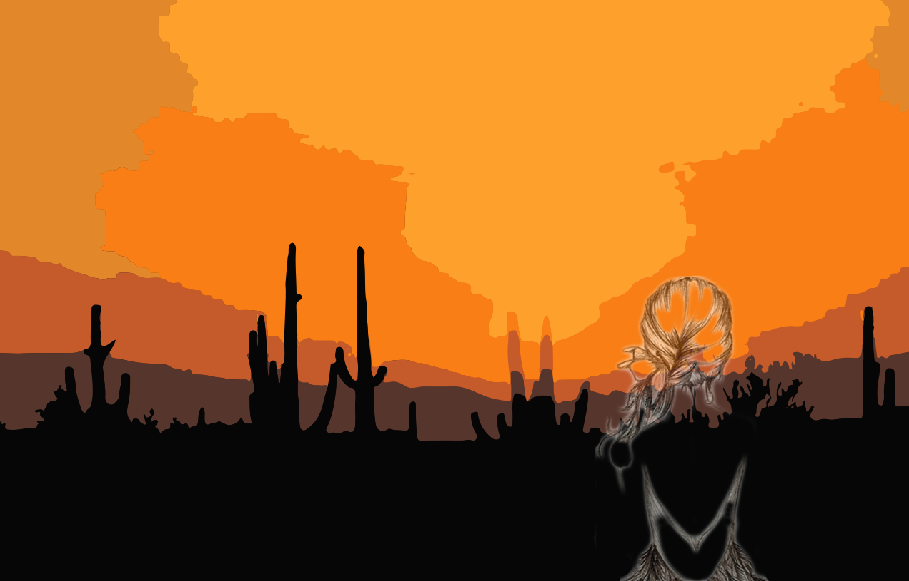
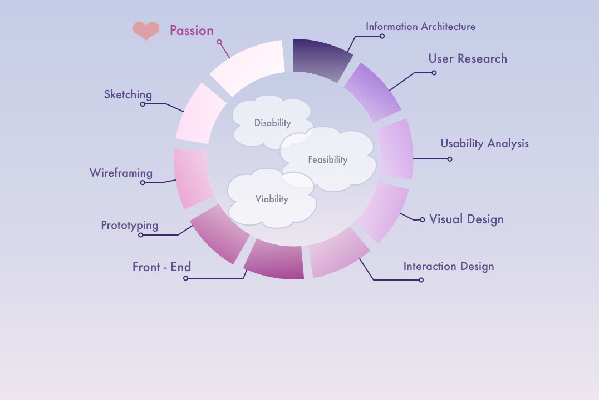

  
My Goal
- Explore how interaction design patterns, style guides, visual design trends, and design templates can influence the user experience
My Passion
- Experience can be referred for new solutions, but can't be copied
My Approach
Finding solutions through brainstorming, Building models to test, Gathering suggestions at every single stage